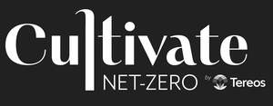

Trade Mark Journal No.2025/032 8 August 2025
UK00004239591 25 July 2025 (1,3,4,5,30,31,33,40,41,44)

International priority date claimed: 4 July 2025
(European Union Intellectual Property Office (EUIPO))
(019213231)
- Class 1
- Chemical products for industrial use; alcohol, in particular alcohol for the chemical industry; solvent alcohol for use in the composition of chemical products; ethyl alcohol; glucose for industrial use; artificial sweeteners.
- Class 3
- Alcohol for use in the composition of perfumery products.
- Class 4
- Fuels; fuels based on alcohol, beet, sugar cane, cereals, and wheat; fuels; biofuels; biofuels based on beet, sugar cane, cereals, and wheat; fuel alcohol (ethanol); bioethanol; alcohol used as fuel; fuels resulting from the processing and fermentation of agricultural products.
- Class 5
- Medicinal alcohols; Sugar for medical use; Glucose for medical use; Native starches for dietetic or pharmaceutical use; Modified starches for dietetic or pharmaceutical use; Food supplements, namely vegetable proteins for human consumption.
- Class 30
- Sugar in lumps, sticks, and powder; beet sugar; cane sugar; liquid sugar; granulated sugar; caster sugar; molasses; natural sweeteners; glucose for food use; preparations made from cereals; cereal bars; mueslis; sugars derived from the processing of beet and sugar cane; table sugar for household use; fructo-oligosaccharides; natural sweeteners based on stevia; sweetening products derived from starchy materials.
- Class 31
- Agricultural products (neither prepared nor processed); grains (seeds); beetroots; sugarcane; corn; wheat; cassava; potatoes; vegetable proteins for animal feed; products intended for animal feed derived from the processing of beet and cereals; animal food, particularly live animals, pets, and domestic animals; edible chewable articles for animals; Beet pulp for animal feed.
- Class 33
- Alcoholic beverages (except beer); alcohol for use in alcoholic beverages; alcoholic extracts and essences.
- Class 40
- Processing and processing of agricultural products; Processing and processing of beets, sugar cane, cereals, and corn; processing of beets into sugar and alcohol; processing of cane into sugar and ethanol; processing of cereals into bioethanol and glucose; refining; distilling; processing and processing of agricultural products into fermented products for use in biofuels, edible alcohol, and solvents.
- Class 41
- Training; provision of training in the field of agriculture.
- Class 44
- Agricultural services; Consulting on low-carbon agricultural techniques; Consulting on regenerative agricultural techniques.
TEREOS SCA
Representative: Edwin Coe LLP